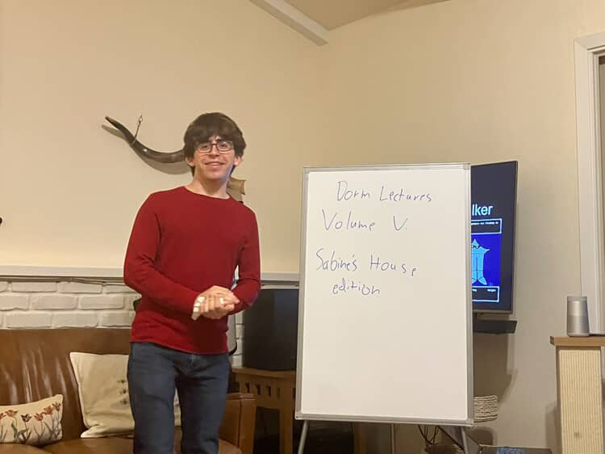
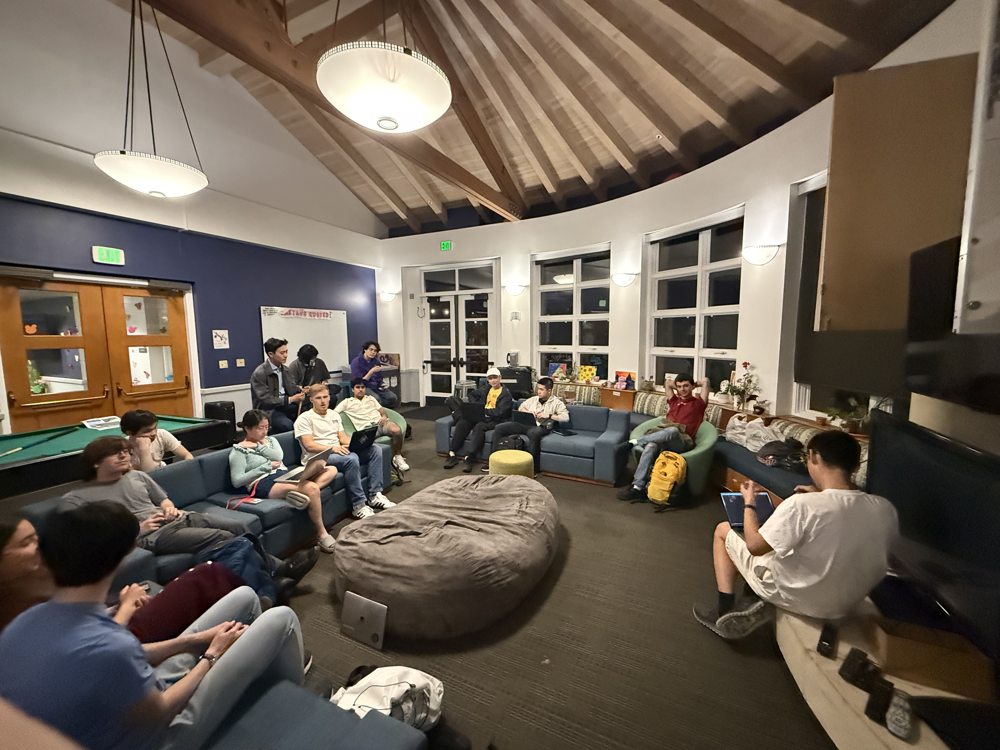

Dorm Lectures is a place for ideas we don't otherwise have a space to consider. Each Sunday night we bring two students to a dorm on campus to talk for 15 minutes about an idea they care about.
We believe that when the only context we have for engaging with ideas is a formal, strict, academic one – where we think for assignments and write for grades – we've lost the life of the mind. We're therefore interested in ideas at their most alive: ideas before they've been pinned down and bound into a rigid form, when they're still unpredictable, even dangerous. We encourage lectures that are experimental and theses that are unpolished. Above all, Dorm Lectures is a place to think together.
Over the course of more than 70 lectures, we've had the pleasure of hearing about an incredible diversity of topics, among them lost classics, chip fabrication, philosophy of science, biomimicry, Stanford's architecture, constitutional law, AI explainability, and sufi mysticism. We look forward to hearing yours! :)
- The Dorm Lectures teamSign up for the mailing list here.
We email once per week announcing locations and speakers.

